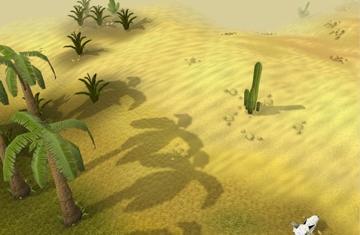

")
A New Look RuneScape: Part 1

A New Look RuneScape: Part 1
The saying goes that a picture is worth a thousand words, which is why we decided to first announce RuneScape's new detail mode with a couple of screenshots. If you have not seen them yet, check out the 'An Image of the Future' and the 'An Image of the Not-Too-Distant Future' newsposts. The pictures in this Development Diary (part one of two) will continue to do most of the talking, but if you'd like to know everything about how this graphical update pushes the boundaries of Java-based online games, read on...
A brief history of Tools
"We've considered a hardware-rendered version of RuneScape a number of times in the past, but it was only two years ago that we felt Java was mature enough."
 Andrew
Andrew
Lead Developer
The story of this graphic update project began a year and a half ago, and who better to ask about it than Lead Developer, Andrew Gower: “We've considered a hardware-rendered version of RuneScape a number of times in the past, but it was only two years ago that we felt Java was mature enough.” We knew the things we wanted – textures, shadows, lighting, fullscreen – and it seemed the right time to start, as Andrew continues: “I tasked the Tools team to run a feasibility study to verify if it was possible to do what we wanted to do.”
Mod Nick, Head of Tools, says, “It wasn't long before it became apparent that we wanted to do this, needed to do this to move forward and, more importantly, could do this, so it became my team's main focus.” The Tools team, which develops and maintains all of Jagex's in-house development software, then went about this study. They had to be very thorough, so spent around nine months researching things like how possible all of the features we wanted were, how we would do them, how they'd fit together, etc. Mod Nick says, “The feasibility study had to cover everything we wanted to achieve; we didn't start any work on the game's engine until we could prove, 100%, that nothing would stop us.”
Graphics re: sources
It wasn't just the Tools team that was bolstered for this project: “I was brought on to the project when it went into full development, concepting all the areas, and worked with Tools on how this project was actually going to work,” says Graphics' Mod Farley. He continues with, “The actual development work wasn't too hard. The main problem was the sheer size of the task: how to manage over 32,000 assets, all those map squares, etc.” It was clear from the size of the project that the Graphics team would need new resources, so it could work on this graphical improvement while looking after all of its existing responsibilities.

Click here to see a larger version of this image.
Mod Farley says, “We brought in a team of almost 30 artists, giving opportunities to people new to the games industry, a lot of them straight out of university...they've really risen to the task.” Initially, we considered that a project of this scale might require more artists, but those we got proved to be so efficient and prolific, there was no need. “Some of them had limited experience, but they've all proven themselves. Some are now even running parts of the project on their own,” says Mod Farley. That Graphics project team, with the support of the Tools team, have put nine months of development into RuneScape's new look, for a total project length of eighteen months.
Texture massaging
The first and perhaps most obvious improvement is that everything in RuneScape has been given a texture. In the other detail modes, most surfaces are simply shaded, as textures require more memory, something that we have to be very strict with to make RuneScape run through Java in a browser. Mod Farley says, “For example, previously, a brown surface could have been depicting mud, wood or clay, its actual substance only being derivable from context, but with textures, it's easy to tell apart a muddy path, wood flooring or a clay object at a glance.”

Don't worry about our familiar friend in the image above, characters will have improved round shadows.
Click here to see a larger version of this image.
"I once accidentally ended up with this crazy, jelly-like texture while trying to make a floor texture."
Mod Lluis
Graphics
The way we implement textures in RuneScape is slightly different from the norm as, even though PC graphics cards can deal with textures, they still need to be downloaded by the RuneScape game client. As textures can have large file sizes, they would take too long to download. Mod Nick explains the process: “The Graphics team create textures in an editor, which then converts it into a series of instructions at a fraction of the file size. Instead of the game downloading a texture, it's recreated on the player's computer from that series of instructions, as and when it's needed. This is called procedural texturing.” Texturing is not the only thing we do procedurally, which is what has allowed us to keep the experience of playing RuneScape in the new detail mode the same as it currently is (e.g. a comparable loading time after the initial download and no extra steps required).
Designing textures in this way requires more than artistic ability, though. Mod Farley says, “An artist controls a whole load of graphs, charts and nodes to build a texture; the combined art and math involved takes a lot of ability and skill. It's more like sculpting than drawing.” Indeed, it can, on occasion, cause unexpected results, as Graphics' Mod Lluis explains, “I once accidentally ended up with this crazy, jelly-like texture while trying to make a floor texture.” He kept it as, although it wasn't ideal for a floor, it was perfect for the spirit jelly familiar.
Premium blend
Textures add a lot to the game, creating a more realistic and immersive environment, but one of the other enhancements related to texturing is better blending. You'll be able to see in all the screenshots that the areas where surfaces meet is less pronounced and more natural. Mod Farley says, “Previously, paths had very hard edges, which showed up how we built the world. Now, with softer path blending, things look more organic.”

Note the varying ground textures of this farm in Rellekka and how they flow into one another.
Click here to see a larger version of this image.
Before, everything was just flat colour, so we've had to introduce a greater variety of ground types to avoid over repetition. Blending has been implemented to allow both underlay and overlay textures too, for instance allowing a grass texture to be placed over a mud texture. The combined effect can be quite subtle and just looks natural. "If something just looks and feels right, if you don't notice these things after the initial 'Wow!', then that's real success," says Mod Nick.
Wrestling with shadows
Every object in the game now casts a shadow based on where we've positioned the sun for that location. Mod Nick says, “Different areas will be sunny or gloomy, and shadows are created dynamically.” Different areas will be set at varying times of the day, subtly changing between map squares, allowing us to create specific atmospheres in each area. For instance, certain parts of Morytania now live within a permanent shadowy twilight...appropriately spooky for those living under vampyric oppression.

As it would in reality, the cactus shadow falls differently to the palm trees, due to the changing gradient of the slope.
Click here to see a larger version of this image.
Another effect that allows us to create atmosphere is the use of fog. The actual draw distance - how far away objects can be seen from - hasn't changed. Previously, objects coming into a player's view would just pop into existence. Mod Nick says, “The combination of blending and fogging allows us to introduce things on the horizon more naturally and smoothly.” The colour and thickness of fog can also be adjusted, so it gives Graphics another atmospheric tool to create, say, a murky swamp environment with a cloying, gangrenous fog (a real pea souper)...and who knows what monsters might be lurking within...

Some more shadows outside the Champions' Guild
Click here to see a...different version of this image.
In the next Development Diary...
We hope this Development Diary has answered some of your questions regarding this imminent ('within a couple of months') update. More questions will be answered in the lead up to release, both in the concluding part of this diary and in the usual ways (Behind the Scenes, newsposts, etc). Part two of this diary focuses on lighting, water effects, fullscreen mode and more...
Concluded in: A New Look RuneScape: Part 2